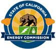

Experience
Here you can see and read about my internship, research and work experience.
Energy Analyst and Environmental Engineering Intern
California Energy Commission, Sacramento, 7/2016-6/2017
Analyze data from publicly accessible sources such as state and governmental agencies in addition to NGO’s. Prepare professional quality reports in excel and power point for marketing and publications. Take and keep detailed notes at meetings and project presentations. Prepare and locate material for Cal-Adapt website blog and academic news reports. Summarize complex technical reports in understandable language using Microsoft power point and word.
First Year Aggie Connections Peer Mentor
Student Academic Success Center, UC Davis, 3/2016-6/2017
Worked collaboratively with staff and faculty to plan numerous events for first years to aid in transition to college. Engaged freshman and transfers with leadership training, personal development and campus engagement resources.
Teaching Assistant/Roof Helper
UC Davis Physics Department, Davis CA, 4/2016-1/2017
Assisted with teaching and supervision of Astronomy Laboratory course in the UC Davis physics department. Answered student questions regarding course material and expectations. Contributed to writing and proctored oral and written final examinations at the end of the term. Supervised student use of telescopes and lab equipment. Prepared for labs weekly.
Physics and Math Tutor
Student Academic Success Center, UC Davis, 9/2015-1/2017
Prepare material weekly to teach students numerous physics and math courses, provide individual tutoring for athletes, underrepresented and first generation college Students, and engage students to create an active learning environment. Explain complex concepts from class in understandable ways.
Research Assistant
Davis MM-Wave Research Center, UC Davis, 9/2015-10/2016
Measure circuit responses under high frequencies ranging from 10MHz to 67GHz (primarily in the 5GHz-30GHz) Assist with circuit measurements optimized for X-band (8-12GHz). Simulate circuit designs with AWR Microwave Office. Preform design and layout for micro circuits used in measuring high frequency responses.
PCB Layout and Design Intern
Charismac Engineering/EM&N8 Controllers, Auburn CA, 7/2015-9/2015
Designed parts with Altium the electronics design software, researched components for wireless controllers and sensors. Worked collaboratively with Graduate student interns and Professional Engineers. Found best deals on Market for components to be used in wireless sensing devices.
Marketing Intern
Sustainability and Nutrition Office, UC Davis, 4/2015-6/2015
Oversaw marketing for highest grossing term on record at on campus farmers market and increased profits by over 320% from previous quarter. Coordinated multiple student interns and volunteers. Distributed buttons to promote farmers market. Managed weekly fruit basket promotional program. Wrote weekly newsletter article on farmers market. Represented department at Annual Sustainability Summit.
Undergraduate Researcher
Chemistry Department, UC Davis, 4/2014-4/2015
Performed experimental synthesis of materials for renewable energy technologies. Analyzed samples using desktop Powdered X-Ray diffraction. Made ampoules from quartz tubing and Sealed ampoules under vacuum. Worked in the Kovnir Group.